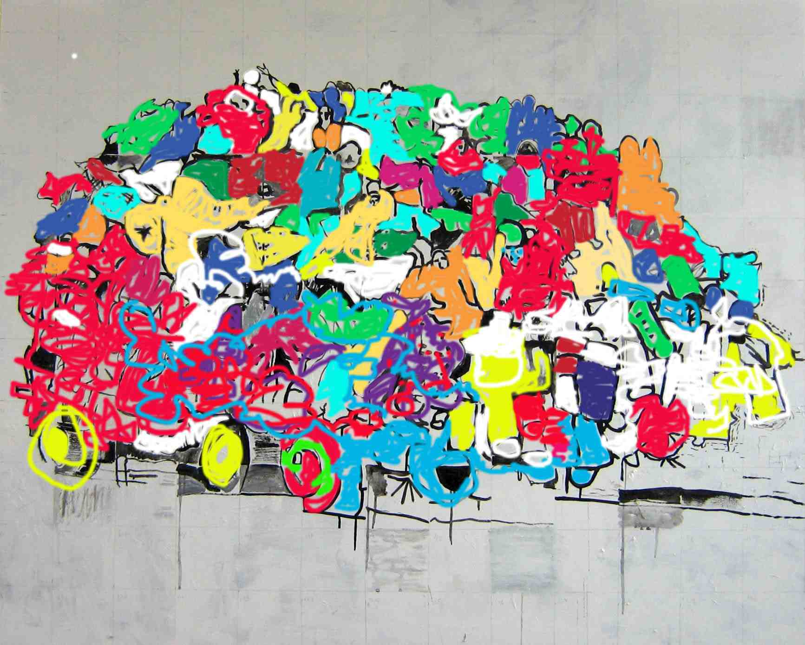

About
Jane’s love of drawing is evident in her work. Firstly she observes and then responds, drawing and layering with paint, pencil, charcoal or pen.
She uses her own personal language to describe her subject. Janes most recent work is of intimate portraits, monoprints, where she enjoys the immediacy and the accidental.
“I make creative judgements on what to manipulate… I hope that the pieces are fun, charming yet intriguing. I endeavour to make work that captivates my audience.”
Jane continues to work with mental health groups and homeless projects where she strives to engage the participants in a variety of workshops, encouraging creativity and restoring hope and optimism for the future.
The work is hugely varied. Jane sees her work as inspiring, challenging and a great opportunity to work with amazing people.